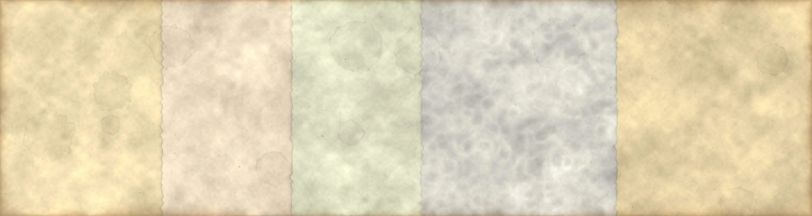

Instala Mampara 1916Se abre a pantalla completa y funciona sin internet.
1 / 5
Principios de Economía · Libro digital
México1916 – 1940
El PIB y la deuda externa, de la Revolución al cardenismo
Celis Galindo Max · Muñoz Vidal Erick · Hernández Vázquez Luis Ángel · Acosta Calva Israel · Lopez Casillas Sinuhe Demir Licenciatura en Ingeniería Económica y Financiera · Primer semestre · Escuela Superior de Apan, UAEH